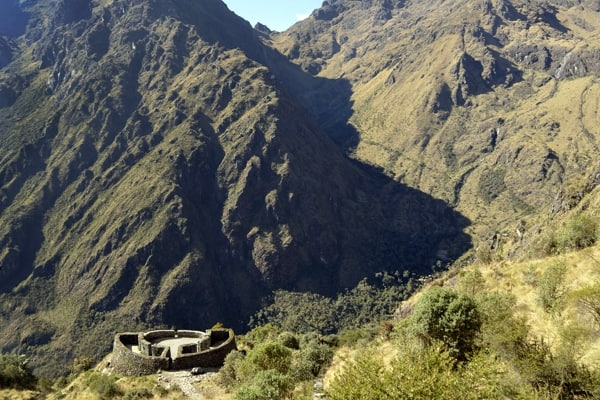

Day 3’s high saddle — lower than Dead Woman's Pass, still a thin-air climb that unlocks Sayacmarca and the ruins ahead.

Runkurakay Pass is the second major pass of the classic Inca Trail, crossed on Day 3 after the Runkurakay ruins. Our elevation mark is about 12,936 ft (3,942 m) — lower than Dead Woman's Pass, still a serious alpine effort the day after your hardest climb.
Many hikers call Day 3 their favorite precisely because two passes pair with extraordinary archaeological sites rather than pure suffering.
RUNKURAKAY PASS · hash #runkurakay-pass.
Our interactive Mapbox tour follows GPS collected on the classic Inca Trail — fly through this stop and the full route to Machu Picchu.